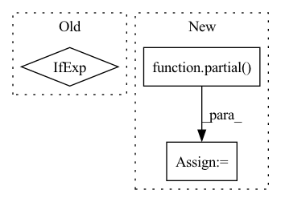

Pattern ID :671

Before Change
sparse_layer = cast_tuple(sparse_attn, depth)
for _, sparse_attn in zip(range(depth), sparse_layer):
attn_class = Attention if not sparse_attn else partial(SparseAttention, sparse_attn_global_indices = sparse_attn_global_indices)
layers.append(nn.ModuleList([
PreNorm(dim, attn_class(dim, causal = causal, seq_len = seq_len, heads = heads, dim_head = dim_head, dropout = attn_dropout, noncausal_attn_len = noncausal_attn_len)),
After Change
elif attn_type == "sparse":
attn_class = partial(SparseAttention, sparse_attn_global_indices = sparse_attn_global_indices)
elif attn_type == "axial_row":
attn_class = partial(SparseAxialCausalAttention, seq_len = seq_len, axis = 0, image_size = image_fmap_size)
elif attn_type == "axial_col":
attn_class = partial(SparseAxialCausalAttention, seq_len = seq_len, axis = 1, image_size = image_fmap_size)
elif attn_type == "conv_like":
attn_class = partial(SparseConvCausalAttention, seq_len = seq_len, image_size = image_fmap_size)
In pattern: SUPERPATTERN
Frequency: 3
Non-data size: 3
Instances
Fragment ID: 1642537
Project Name: lucidrains/dalle-pytorch
Commit Name: de732e8756750e161f0e51fac8baf9bcdb13182e
Time: 2021-02-10
Author: lucidrains@gmail.com
File Name: dalle_pytorch/transformer.py
Class Name: Transformer
Method Name: __init__
Parent Class: nn.Module
Fragment ID: 1642541
Project Name: lucidrains/x-transformers
Commit Name: 257fee10394c3cfb3467537dba53d8a610dc8aee
Time: 2020-12-27
Author: lucidrains@gmail.com
File Name: x_transformers/x_transformers.py
Class Name: AttentionLayers
Method Name: __init__
Parent Class: nn.Module
Fragment ID: 1642540
Project Name: lucidrains/imagen-pytorch
Commit Name: f5d904c44c2dd9cb89fc7f729e7546a263b2f91f
Time: 2022-06-26
Author: lucidrains@gmail.com
File Name: imagen_pytorch/imagen_pytorch.py
Class Name: Unet
Method Name: __init__
Parent Class: nn.Module